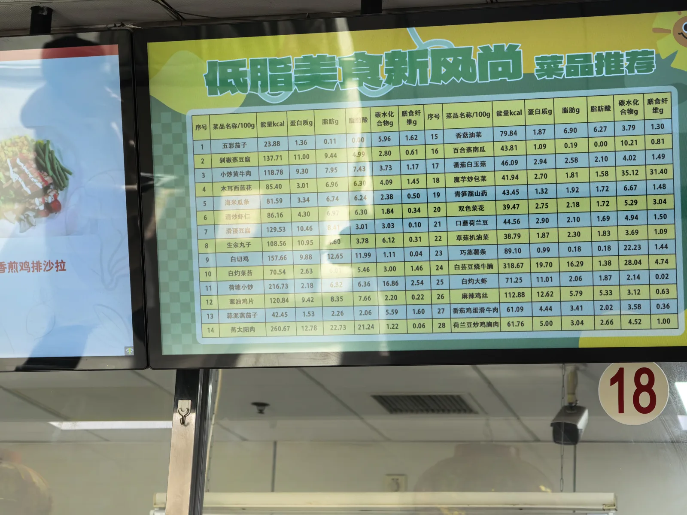

01 选择食堂 中国农业大学 · 东区
GONG YI · MENU & NUTRITION
今天，也要好好吃饭。
从现场菜单到营养参考，把每一个窗口看得明白，
把这一餐选得轻松。
6精选窗口
40已录入菜品
100g统一营养口径

WINDOW 18
低脂美食新风尚
LIVE QUEUE · 大家帮大家
排队雷达 每 60 秒刷新
看一眼窗口前有几个人，顺手报一下。20 分钟内的上报会实时汇总成等待时间。
正在读取实时数据…
SMART MEAL · 按目标配一餐
今天怎么吃 已优先避开排队窗口
营养按各菜参考标准份估算；热量与营养数值为参考值，仅作日常饮食参考。
03
挑选菜品
没有找到这道菜品
换个关键词，或清除当前营养筛选试试。